Tateyama, Chiba: things to do, food and stays
Tateyama · Chiba
Tateyama
Highlighted on the Chiba map.

Stay
THE SHINRA 森羅
THE SHINRA Shinra
Inn in Shiomi, Tateyama with open-air baths.
百年古民家 Auberge 季の音
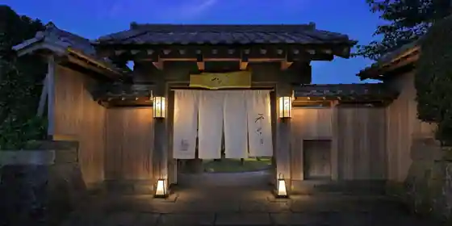
Hyakunen Ko Minka Auberge Ki No Oto
Inn in Yamamoto, Tateyama with open-air baths and a sauna.
ホテル洲の崎 風の抄
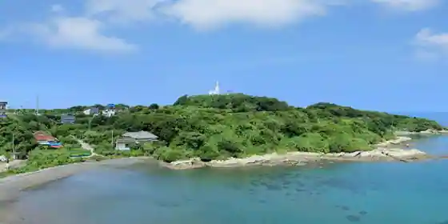
Hotel Su No Saki Kaze No Sho
オーベルジュ オーパヴィラージュ
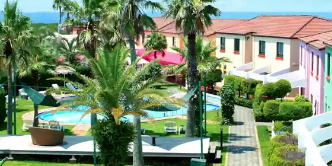
Oberuju Opa Villa Ju
おさしみの宿 たろべ
Osashimino Yado Tarobe
Inn in Shiomi, Tateyama with open-air baths and a large communal bath.
ドギーズ 館山 布良海岸 by GIFTHOUSE - Dog friendly villa -
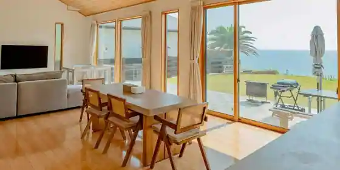
Dogizu Tateyama Mera Kaigan by GIFTHOUSE - Dog friendly villa
雫花
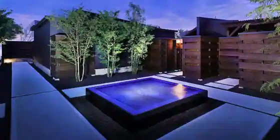
Shizuku Hana
Inn at Tateyama Onsen in Shiomi, Tateyama with open-air baths and a sauna.
たてやま温泉 千里の風
Tateyama Onsen Senri No Kaze
Inn at Tateyama Onsen in Fujiwara, Tateyama with open-air baths and buffet meals.
鏡ケ浦温泉rokuza
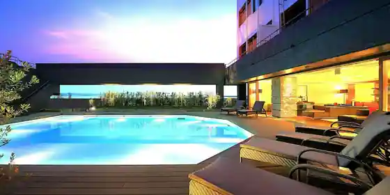
Kagami Ke Ura Onsen rokuza
Inn at Kagamikeura Onsen in Nako, Tateyama with local seafood dinners.
ＴＨＥ ＡＮＮＥＸ 館山シーサイドホテル
THE ANNEX Tateyama Shisaido Hotel
海の湯宿 花しぶき
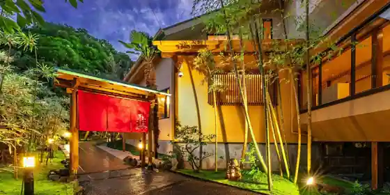
Umi No Yuyado Hana Shibuki
GIFTHOUSE 2nd 館山 洲宮
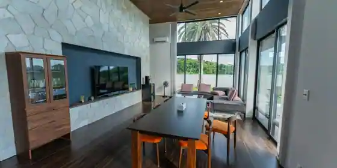
GIFTHOUSE 2nd Tateyama Su Miya
Inn in Sumiya, Tateyama with one group per day and a sauna.
Dining
館山美食倶楽部
Tateyama Bishoku Kurabu
ピネキ
Pineki
新松
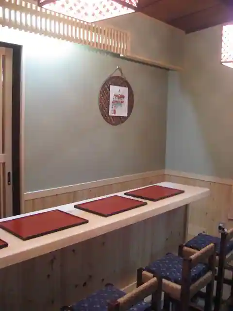
Shinmatsu
ロクザ
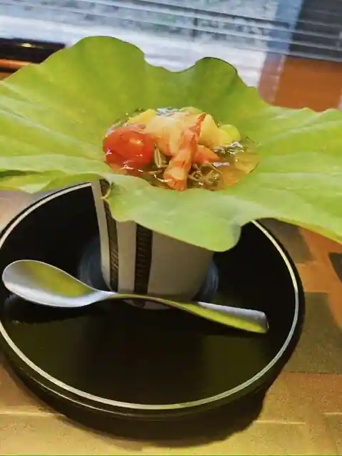
Rokuza
ふたご
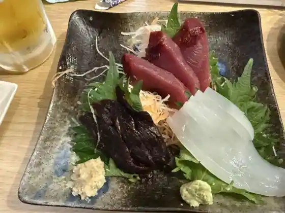
Futago
森羅
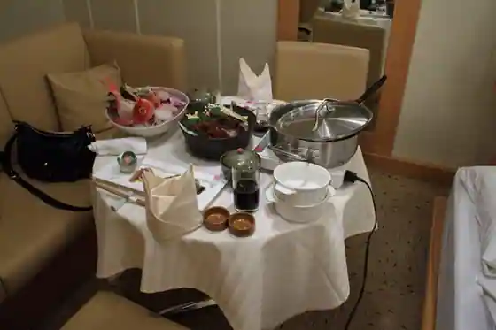
Shinra
焼肉家東貴
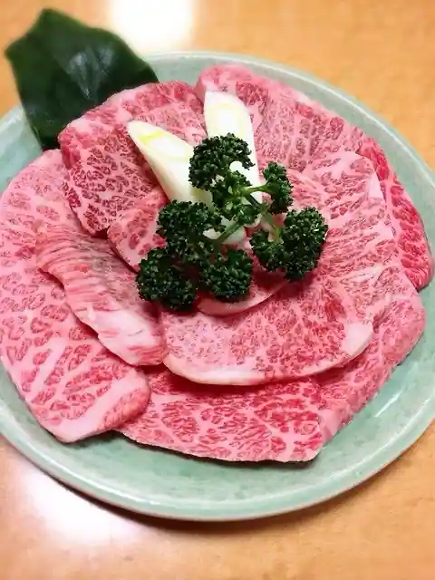
Yakiniku Ie Higashi Takashi
レインボーグリル
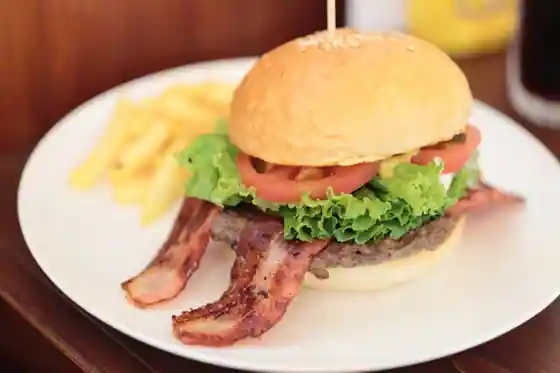
Reinboguriru
館山中村屋 館山駅前店
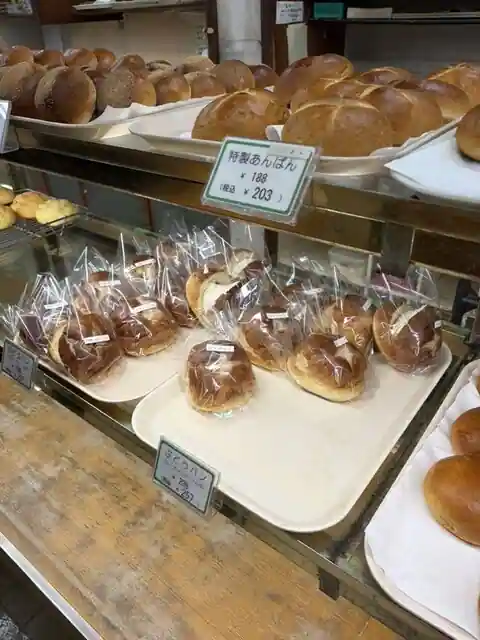
Tateyama Nakamuraya Tateyama Ekimae
アクア トッツォ
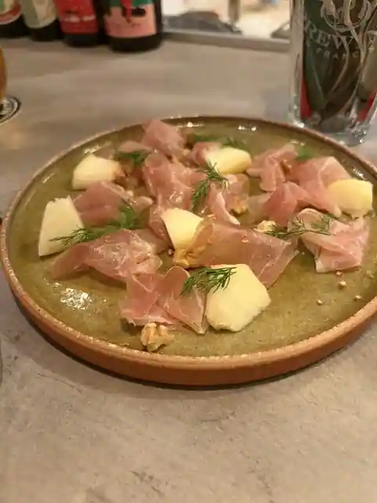
Akua Tottsuo
館山中村屋 館山バイパス店 ： 中パンカフェ
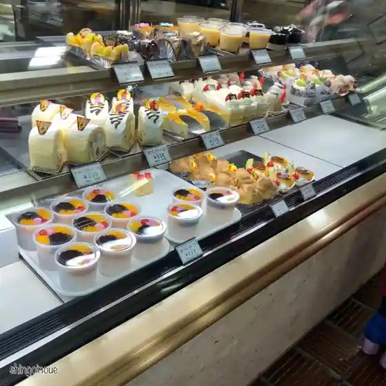
Tateyama Nakamuraya Tateyama Baipasu : Naka Bakery Cafe
オステリア・ベッカフィーコ
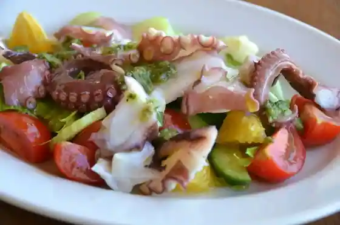
Osuteria Bekkafiko
波音食堂
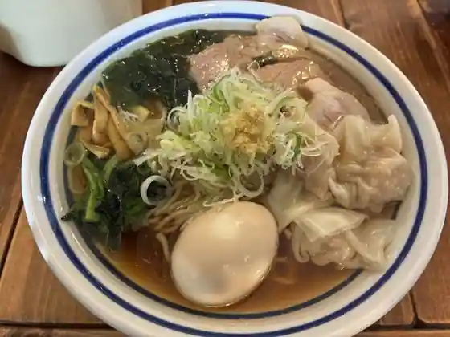
Namioto Shokudo
鮨やまと 館山店
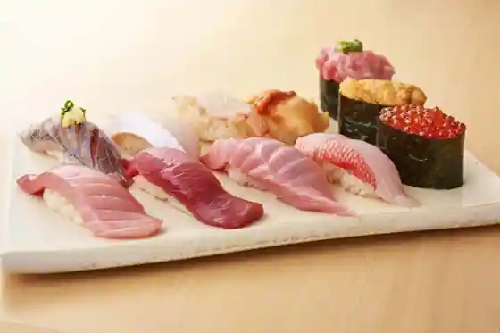
Sushi Yamato Tateyama
館山なぎさ食堂
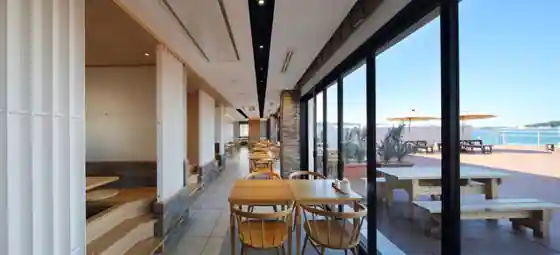
Tateyama Nagisa Shokudo
漁港食堂 だいぼ
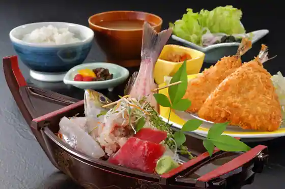
Gyoko Shokudo Daibo
南房総 やまと寿司 館山本店
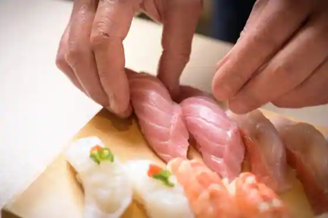
Minamiboso Yamato Sushi Tateyama Hon
漁師料理たてやま
Ryoshi Ryori Tateyama
味処あさみ
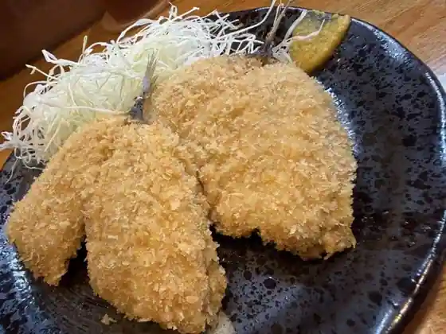
Ajidokoro Asami
巴寿し
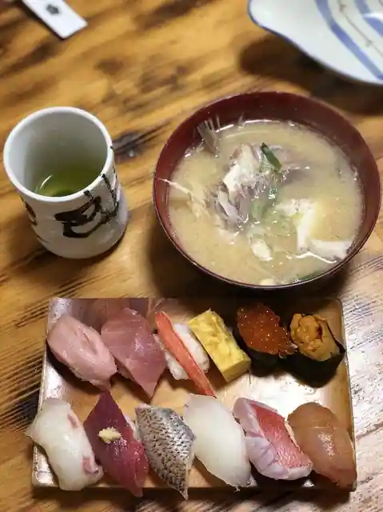
Tomoe Hisashi Shi
黒潮拉麺
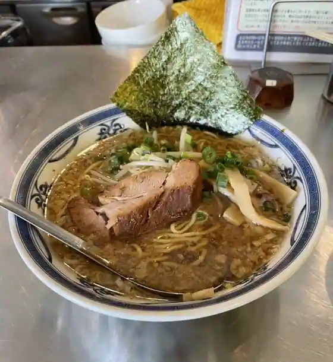
Kuroshio Ramen
トレイクル マーケット&コーヒー
Toreikuru Maketto & Coffee
館山食堂
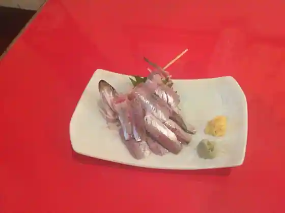
Tateyama Shokudo
Sights
Oki no Shima Park
Awa Kuniichi Yuki Miya Awa Shrine

Daifuku Tera (Gake Kannon)

Suzaki Shrine

Nagisa no Eki Tateyama

Hojo Coast (Beach)
Kisetsu no Hana (Na no Hana) / Boso Furawa Line
Sunosaki Lighthouse
Roadside Station Guriin Farm Tateyama
Tateyama Kaigun Kokutai Akayama Chika Hori Ato
CAMPGROUND BREEZE TATEYAMA
Shiroyama Park (Tateyama Shiro)
Hazama Beach
Kanko Teichiami Ryo Kengaku / Sakata Gyoko Oki
Tateyama Ichigo Kari Center
Jibie Kaitai Experience / Tateyama Jibie Center
Tateyama Ritsu Museum
Genchi Koza (Kaitai Kengaku) / Tateyama Jibie Center
Fishing Port Shokudo Daibo
Tateyama Jibie Center
Nako Tera
Tateyama Yacho Forest
Nippon Sandai Uchiwa (Boshu Uchiwa Tsukuri Experience) to Rentasaikuru
Toyofusaichigo Sono / Tateyama Kanko Ichigo Kari Center
Arai Beach
Tomorokoshi Shukaku Experience / Hyaku Warai Sono
Tsuruya Hachiman Shrine
Kisetsu no Hana (Tsutsuji) / Shiroyama Park
Ichigo Kari / Roadside Station Guriin Farm Tateyama
Minamiboso Na no Hana Village
Sora Mame no Shukaku Experience / Anzai Farm
JA Guriin Tateyama Mise